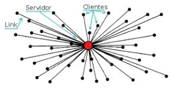
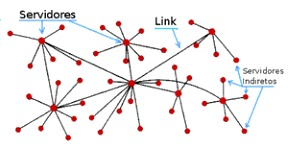
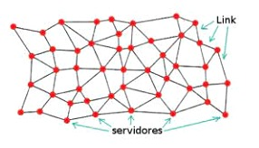
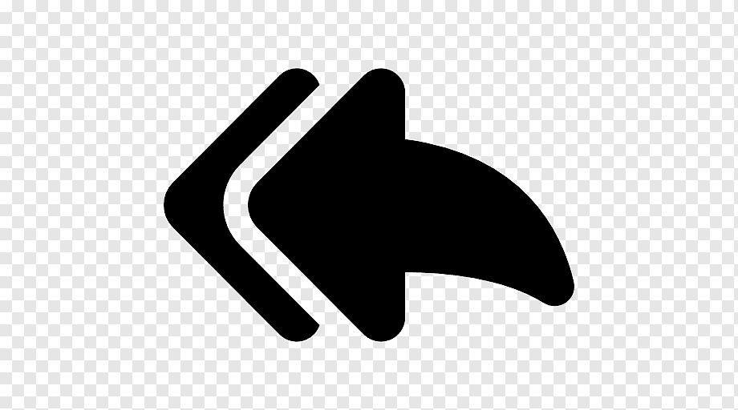

Modelos de redes de computadores
São os formatos estruturais, físicos e lógicos de uma rede. Cada modelo representa uma construção distinta dentro da rede de computadores, podendo ser utilizada dependendo do que se quer fazer com um maquinário específico. Existem três Modelos-Base que podem ser utilizados. São eles:
-
rede centralizada:
Este modelo cuida da centralização das tarefas e serviços. É indicado às redes que precisam de gerenciamento e controle de uso. Os dados são armazenados em um único computador chamado de servidor, ao qual você precisa se conectar para acessar as informações
Ex.: redes bancárias, redes de escolas e universidades

-
Rede Descentrelizada:
Este modelo cuida da independência das tarefas e serviços. Nele, o gerenciamento da rede é muito mais limitado e complicado, pois não há controle sobre as funções da rede. Não há um ponto central e os dados são armazenados em vários servidores conectados entre si que podem estar em um mesmo local físico ou dispersos
Ex: redes com múltiplos sistemas operacionais, redes domésticas, a Internet.

-
Rede Distribuida:
Este modelo atua com a distribuição de tarefas e serviços, cada nó da teia sendo responsável por uma função, ainda que estejam interligados como uma rede de pesca. A rede distribuída trabalha em conjunto para que some os processamentos e aja como um só, facilitando a execução do sistema. Cada computador (nó) da rede possui uma cópia de todos os dados, tendo, portanto, igual importância e acesso às informações
Ex.: Clusters (Conjuntos) para execução de tarefas complexas como mapeamento de constituição química de determinadas proteínas e Clusters (Conjuntos) para quebra de algoritmos numéricos complexos

Voltar
Developed by:Vinicius,Yago,Gustavo,Leticia,Tayssa,Isabela